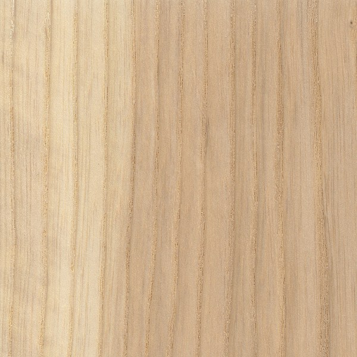

|
|

|
Materials Used in Ornamental Turning
Ash |
|

White Ash
 Walnut and Ash
Walnut and Ash
Ornamentally Turned Objects Ash can also be used for ornamental turning. It holds shapes pretty well, and finishes to be super smooth. I have found it is good for objects that will be handled often. One example is the salt mill shown to the left. The pieces I find are whiter than the sample shown here. It's not too hard (unless you are trying to carve it), so you won't have to resharpen often. And it shows cuts well enough to determine if the design is good or not. Prototyping This is a really good wood for prototyping, and that is what I use it for most often. As a wood that holds shape and doesn't tear out when you get to the edge, it offers a very low cost solution to ensure your shape is what you want, and the approach you want to use works. With the ash borer causing trees to be felled so much, it is very available and at a very low cost (or even free).  Ash used as a
Ash used as a
Consumable Collet Chuck Work Holding This is a really good wood for making jigs, and I use it for that purpose when the chuck jaws I have don't fit the need. It is a very low cost alternative to buying jaws which I may only use once. And Ash is hard enough that it works well for this purpose. Recently, I was making a knob on the lid of a Beads of Courage box. The knob (the Osage Orange piece shown in the picture to the left) is designed to be held to the lid by a tenon. I made a wooden collet (shown in the picture to the left) using Ash to hold the knob by the tenon. The wooden collet served two purposes: Firstly, it facilitated easily holding the knob for the ornamental turning. But these jaws also allowed for easily cutting on the bottom part of the knob. This is key as it allowed the rose engine’s horizontal cutting frame to have the clearance needed, and to avoid the cutter hitting the chuck’s metal jaws. This wooden collet is based on Colin Hovland’s article, Wooden Collets for a Scroll Chuck, I have made a number of collets for work holding in a similar approach. Ornamental Turning Notes Working the wood is easy, but requires some pre-planning. End grain work will easily "burn", so you will need to decrease the contact time with the cutter. This can be achieved by slowing the cutter speed (i.e., slowing down the overhead drive), or by increasing the spindle drive speed (I typically run this 40-50% faster), or both. I have also found that a very sharp cutter will make a difference. Finishing Finishing this may be necessary to bring out the cuts. I use oil-based finishes. Other More information is in The Wood Database. |